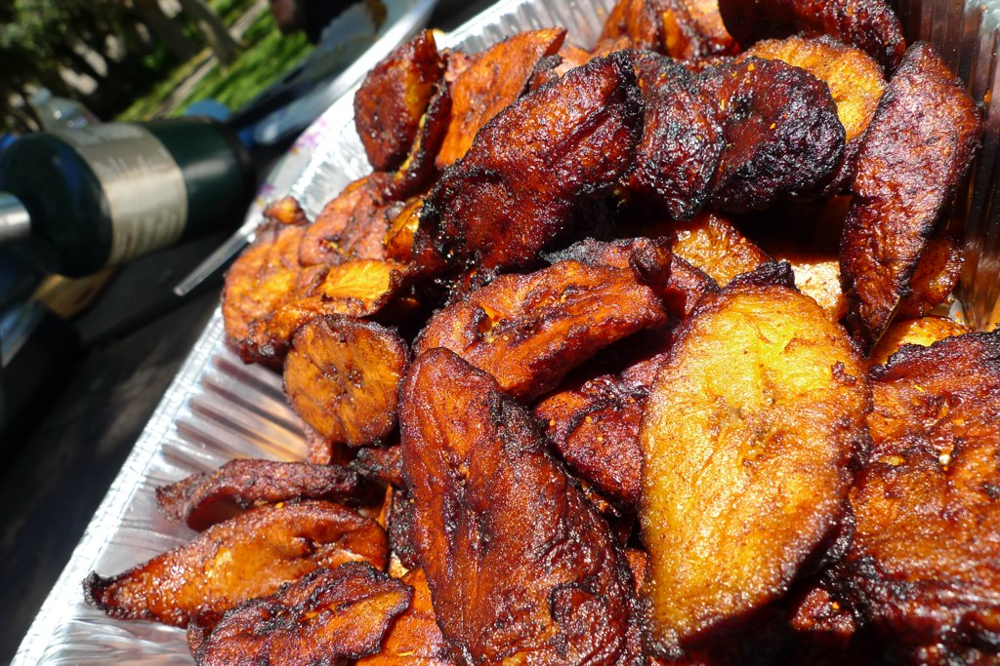

Fried Plantains
- 5 ripe plantains
- Canola oil
Cut peels off of the plantains. Cut into 1/8 inch slices.
Heat 1/4 inch of Canola oil in a skillet pan. Fry each plantain slice for about 3 minutes on each side.
Take off heat and transfer onto a paper towel to drain and cool for 5 minutes.
After, flatten with the back of a spoon and serve.